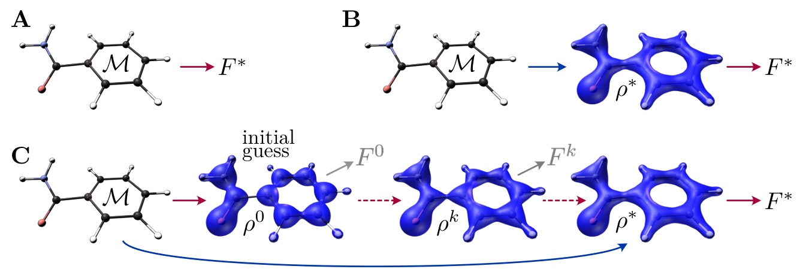
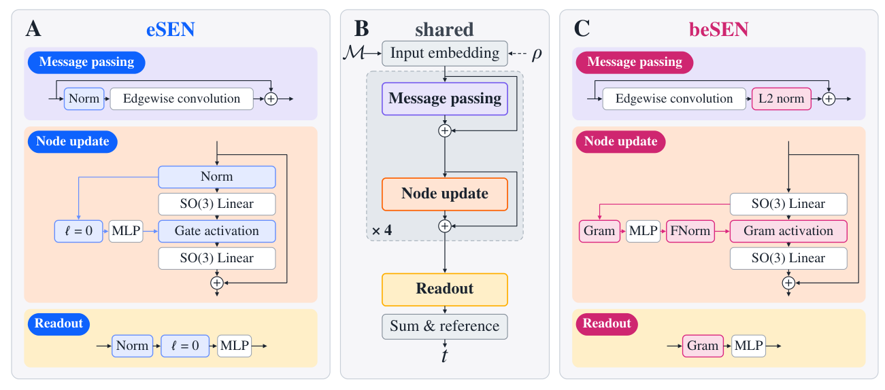
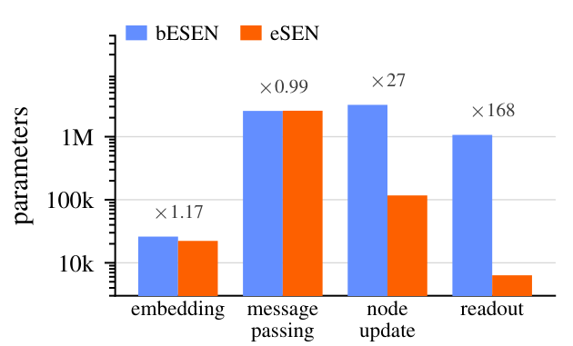
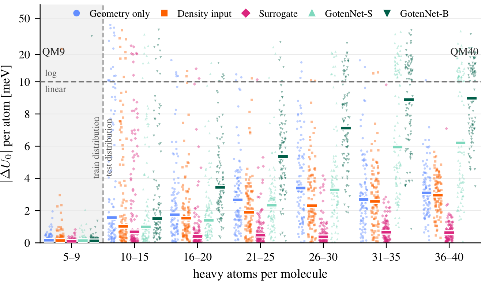

用电子密度代理泛函改善分子性质预测与尺寸外推
论文原文 ↗Electron-Density-Informed Molecular Property Prediction Using Surrogate Functionals
Manuel V. Klockow 等｜arXiv:2610.13649，2026｜官方页面｜
从分子结构快速预测能量、热容等性质，是机器学习替代昂贵量子化学计算的重要用途。电子密度包含电子在分子中怎样分布的信息，已有模型把它加入输入来提高预测精度。这篇工作进一步利用密度的结构：**让模型学到的函数在正确基态密度处取得极小值，并在那里输出目标性质。**作者将原用于无轨道密度泛函理论的代理泛函扩展到分子性质预测，在 QM9 的七个广延性质中的六个上取得最佳结果，并改善向更大分子的外推。
方法怎样做：从“输入密度”到“学习密度附近的函数形状”
电子密度描述空间每个位置的电子分布；泛函是接收整个密度分布、输出一个数的规则。在基态能量问题中，正确电子密度对应能量最低点。代理泛函沿用这一结构：训练网络学会最低点的位置和数值，以及从附近密度走向这个点的方向。本文为每个目标性质训练一个代理泛函，把最低点的数值标签换成相应性质。

图1｜直接从几何预测、经密度中间表示预测，以及增加代理泛函训练的三种路线。蓝色箭头表示使用另一个网络直接预测密度。训练从分子的元素、原子坐标和参考性质出发。作者计算基态密度，再将连续分布拟合成原子中心高斯基函数的系数，供网络处理。对每个分子，训练还保存一份正在优化的密度系数：网络给出更新方向，损失函数要求这一步把密度推向参考基态。正确密度处的梯度约束和曲面上下界，则帮助塑造稳定的极小值。这样，模型学到的不仅是一个结构对应什么性质，还包括密度发生变化时函数应如何响应。
承担这项学习的是 beSEN 等变图网络。“等变”指中间特征随分子旋转作相应变换，最终性质保持不变。beSEN 根据特征间的内积构造 Gram 矩阵，再用这些关系调节通道，使网络更充分地利用电子密度信息。

图2｜beSEN 保留图网络的消息传递框架，改造归一化、节点更新和读出，将特征间关系引入预测。
图3｜新增参数主要分配到每个原子的特征更新和读出，消息传递部分的规模基本相当。使用模型时，作者让一个独立网络从几何直接预测基态密度，再把密度送入性质网络。原本需要约百次迭代的密度优化，由两次网络前向计算完成。训练中的代理泛函约束与使用时的密度预测相配合，把结构、电子信息和目标性质连成一条快速预测路线。
主要结果：密度约束带来精度收益，并帮助模型处理更大分子
作者在同一 beSEN 骨干上比较三种路线。QM9 中零温内能 U₀ 的平均绝对误差，几何模型为 5.3 meV，直接增加密度输入为 4.9 meV，采用代理泛函后降至 2.8 meV。这一对照显示，将密度作为特征与利用密度极小值结构训练，能够带来不同程度的改善。
对于能量、焓、自由能、零点振动能、极化率和热容这七个随体系规模增长的性质，代理泛函全部优于同骨干的两种对照，并在其中六项超过此前最佳模型。作者也比较了不同骨干及训练组件，说明网络结构改造和代理泛函训练共同贡献了精度提升。
更大的分子检验了这一方法的尺寸泛化。模型只在最多九个重原子的 QM9 分子上训练，再预测 QM40 中 600 个含 10–40 个重原子的分子。U₀ 的整分子误差从几何模型的 180 meV、密度输入模型的 140 meV，降到代理泛函的 57 meV。

图4｜按重原子数分组的每原子能量误差。粉色代理泛函在大分子区间保持更低的中位误差，显示尺寸外推的改善。预测密度也能够支持这条快速路线：以参考密度代替网络密度时，U₀ 误差为 2.7 meV，采用预测密度时为 2.8 meV，两者接近。因此，使用阶段可以通过预测密度保留代理泛函训练的大部分精度收益。
研究贡献
这篇工作将电子密度从一种输入描述符推进为训练结构：正确密度既决定性质值，也规定模型在附近应怎样变化。它把代理泛函的用途从电子能量扩展到多种分子性质，并以统一骨干对照和小分子到大分子的测试展示收益。对分子性质模型而言，值得借鉴的是如何让物理中间表示同时参与表征与训练，而不仅仅增加输入信息。
原始摘要完整译文
机器学习方法越来越多地用于直接从分子结构预测化学性质，以绕过量子力学计算通常高昂到难以承受的成本。近期研究表明，在这一情境下，把基态电子密度作为机器学习模型的输入可以提高精度。本工作采用近期提出的代理泛函框架——该框架最初为无轨道密度泛函理论开发——并将其扩展到分子性质预测。我们表明，将基态密度输入模型，同时强制它成为代理泛函的极小值，能够在 QM9 数据集的七个广延性质中的六个上超过当前最佳性能。此外，该方法对来自 QM40 数据集的更大分子表现出更好的泛化能力。在这两个数据集的全部广延性质上，我们的方法均优于使用基态密度信息、但不施加代理泛函约束的模型。